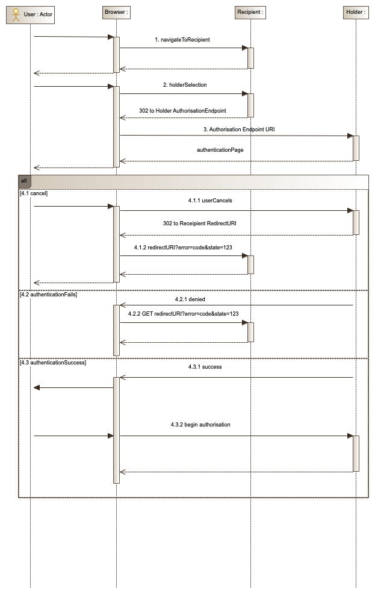
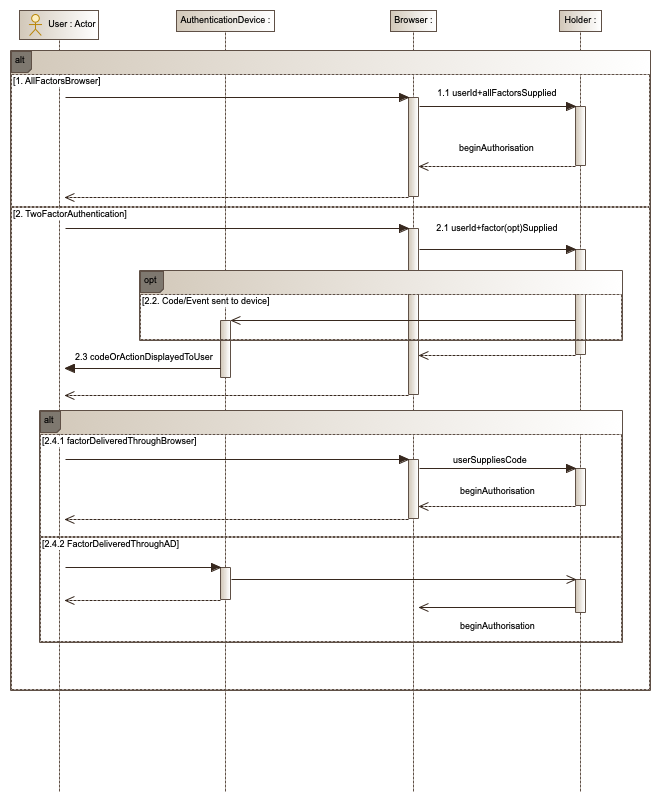
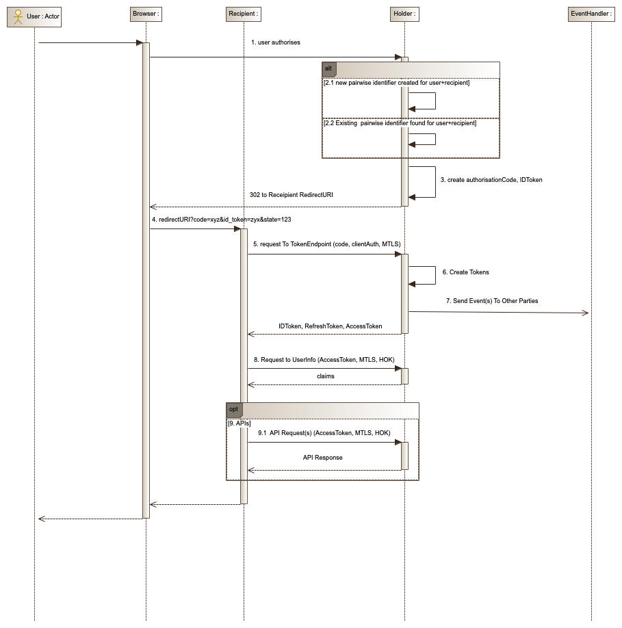
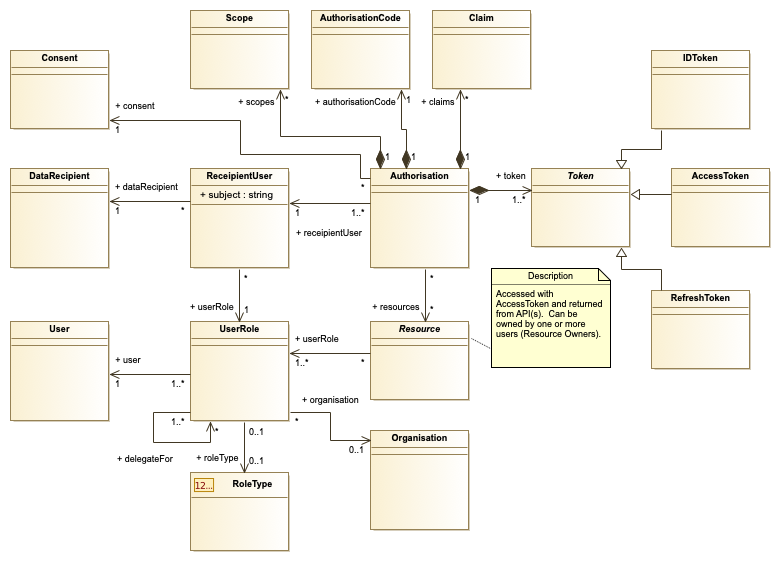

InfoSec Profile 0.0.1
History
| Author | Date | Version | Description |
|---|---|---|---|
| CDS | 22/11/2018 | 0.0.1 | Created Original artifact |
| CDS | 30/11/2018 | 0.0.2 | Created |
The detailed change log for the artifact is available here.
Symbols and Abbreviated terms
- API: Application Programming Interface
- CA: Certificate Authority
- CDR: Consumer Data Right
- CDR-SP: Consumer Data Right Security Profile
- DH: Data Holder
- DR: Data Recipient
- FAPI: Financial API
- HOK: Holder of Key
- JSON: The JavaScript Object Notation
- JWE: JSON Web Encryption
- JWK: JSON Web Key
- JWKS: JSON Web Key Set
- JWS: JSON Web Signing
- JWT: JSON Web Token
- IPLoA: Identity Proofing Level of Assurance
- LoA: Level of Assurance
- LoaAs: Levels of Assurance
- MTLS: Mutual Transport Layer Security
- OIDC: Open ID Connect
- PII: Personally Identifiable Information
- PKI: Public Key Infrastructure
- REST: Representational State Transfer
- TLS: Transport Layer Security
Overview
This artifact will detail the Consumer Data Right [CDR] Information Security Profile (CDR-SP). This profile will be built upon the foundation of the Financial-grade API Read Write Profile [FAPI-RW] which complies with the Open ID Connect 1.0 standard [OIDC]. The CDR-SP will adhere to the OIDC standard and FAPI-RW profile but will restrict implementation choices where necessary. However, the CDR-SP may also extend the behaviour of the OIDC/FAPI-RW where allowed but will not override the behaviour outlined in the FAPI-RW profile and OIDC standard.
Whilst this is a technical artifact, it is guided by the core principles that have to led to the creation of the Consumer Data Right. These are:
- The CDR should be customer focussed.
- The CDR should encourage competition.
- The CDR should create opportunities.
- The CDR should be efficient and fair.
CDR Federation
The CDR Federation will facilitate the secure exchange of consumer data and federation metadata between multiple system entities which will assume one or more of the following roles:
- Data Holder:
- Multiple Data Holders will be supported.
- Data Recipient:
- Multiple Data Holders will be supported.
- Directory:
- It is envisaged that only one directory will be supported and will be
maintained by the Australian Competition and Consumer Commission (ACCC).
- It is envisaged that only one directory will be supported and will be
maintained by the Australian Competition and Consumer Commission (ACCC).
Data Holder
The Data Holder (DR) represents a system entity that authenticates a consumer (resource owner or user), as part of an authorisation process (OIDC) initiated by a Data Recipient, and issues an authorisation for that Data Recipient to access the consumer's data via published APIs. As part of this process, the consumer will provide informed consent before allowing access to their data (resource(s)) by the Data Recipient. For example, a Bank (Data Holder) will authorise access for a FinTech (Data Recipient) to access the resources the consumer has consented to.
A Data Holder must be accredited in order to participate in the CDR Federation. A Holder will allow any Data Recipient, the identity of which is asserted by the Directory, to send authorisation and registrations requests to their services. References to Holder Discovery Endpoints and other related metadata will be published in the Directory.
Data Recipient
The Data Recipient (DR) is a CDR Federation participant that is authorised by a Data Holder to access consumer resources (APIs). For example, A FinTech company that receives authorisation to access a Bank’s APIs.
A Data Recipient must be accredited in order to participate in the CDR Federation and as such will be published as an accredited entity in the Directory.
Directory
The Directory is a central point of discovery for both Data Holders and Data Recipients. Data Holders and Recipient must be registered as accredited entities in the Directory in order for them to participate as members of the CDR Federation. The functionality of the Directory will include but will not be limited to:
- Management of Identities and Access: The Directory will allow registered persons, on behalf of Holders and Recipients, to manage the metadata of their associated organisations and systems.
- Management of Certificates: The Directory will faciliate the issuing, management and revocation of digital certificates.
- Discoverability and Search: The Directory will expose APIs and GUIs (Web applications) in order to support metadata queries across Directory entities.
A full description of the Directory is beyond the scope of this document.
Discovery and Registration
Data Holder Metadata
In accordance with the OpenID Connect Discovery standards [OIDD], Data Holders will expose, in their role as an OIDC Provider, their OIDC Metadata via a discovery endpoint:
Method: GET
URL: https://exampleholder.com.au/.well-known/openid-configuration
Successful Response: 200
Content-type: application/json
Fields:
- issuer
- REQUIRED
- URL using the https scheme with no query or fragment component that the
DH asserts as its Issuer Identifier which must be unique across the set
of Data Holders in the federation. This also MUST be identical to the
issClaim value in ID Tokens issued from this Issuer.
- authorization_endpoint
- REQUIRED
- URL of the DH OAuth 2.0 Authorization Endpoint. Must use https.
- token_endpoint
- REQUIRED
- URL of the DH OAuth 2.0 Token Endpoint. Must use https.
- introspection_endpoint
- REQUIRED
- URL of the DH OAuth 2.0 Introspection Endpoint. Must use https.
- revocation_endpoint
- REQUIRED
- URL of the DH OAuth 2.0 Revocation Endpoint. Must use https.
- userinfo_endpoint
- REQUIRED
- URL of the DH UserInfo Endpoint. Must use https.
- jwks_uri
- REQUIRED
- URL of the DH’s JSON Web Key Set [JWK] document. Must use https.
- bc-authorize
- OPTIONAL
- Backchannel Authentication Endpoint as defined by [CIBA].
- scopes_supported
- REQUIRED
- JSON array containing a list of the [OAUTH2] scope values that this
server supports. The server MUST support the
openidscope value.
- response_types_supported
- REQUIRED
- Must contain values:
codeid_token - JSON array containing a list of the OAuth 2.0 response_type values that this DH supports.
- response_mode_supported
- REQUIRED
- Must contain the following value:
fragment - JSON array containing a list of the OAuth 2.0 response_mode values that this DH supports.
- grant_types_supported
- REQUIRED
- Must contain value:
authorization_code - JSON array containing a list of the OAuth 2.0 Grant Type values that this DH supports.
- acr_values_supported
- REQUIRED
- JSON array containing a list of the Authentication Context Class References that this DH supports. An LoA of 3 is the minimum that must be met. Please Refer to the LoA section of this document.
- subject_types_supported
- REQUIRED
- Must contain value:
pairwise - JSON array containing a list of the Authentication Context Class References that this DH supports.
- id_token_signing_alg_values_supported
- REQUIRED
- Must contain one or more of these values:
PS256ES256 - JSON array containing a list of the JWS signing algorithms (alg values) supported by the OP for the ID Token to encode the Claims in a [JWT].
- id_token_encryption_alg_values_supported
- REQUIRED
- JSON array containing a list of the [JWE] encryption algorithms (enc values) supported by the OP for the ID Token to encode the Claims in a JWT. The DH must encrypt and sign the ID Token.
- id_token_encryption_enc_values_supported
- REQUIRED
- JSON array containing a list of the [JWE] encryption algorithms (enc values)
- request_object_signing_alg_values_supported
- REQUIRED
- Must contain one or more of these values:
PS256ES256 - JSON array containing a list of the JWS signing algorithms (alg values) supported by the DH for Request Objects.
- token_endpoint_auth_methods_supported
- REQUIRED
- Must contain one or more of the following values:
private_key_jwt tls_client_auth - JSON array containing a list of Client Authentication methods supported by this Token Endpoint.
- mutual_tls_sender_constrained_access_tokens
- REQUIRED
- Must contain value:
true - A Boolean value indicating authorisation server support for mutual TLS sender constrained access tokens.
- claims_supported
- REQUIRED
- JSON array containing a list of the Claim Names of the Claims that the DH MAY be able to supply values for. Note that for privacy or other reasons, this might not be an exhaustive list.
Recipient Client Registration
To register as a new Client at a Holder's Authorisation Server, a Data Recipient sends its Client metadata, as specified in [OIDC-CR] in a HTTP POST message to the Client Registration Endpoint of the Holder which includes the Client Metadata parameters that the Client chooses to specify for itself. The request carries an assertion that is signed by the CDR CA private key in order to allow the Holder to determine the validity of the Recipient request.
If a required value is not supplied, the Holder may use a default value from those shown below. It is expected that the Directory rules will feature additional fields and request rules not covered in this profile.
Method: POST
Successful Response: 201
URL: https://directoryexample.com.au/clients
Content-type: application/json
Fields:
- redirect_uris
- REQUIRED
- Array of Redirection URI values used by the DR.
- response_types
- REQUIRED
- Must contain values:
codeid_token - JSON array containing a list of the OAuth 2.0 response_type values that this DR is declaring that it will restrict itself to using.
- grant_types
- REQUIRED
- Must contain value:
authorization_code - JSON array containing a list of the OAuth 2.0 Grant Type values that this DR is declaring that it will restrict itself to using.
- client_name
- REQUIRED
- Name of the DR to be presented to the end user.
- jwks_uri
- CONDITIONAL
- URL for the DR’s JSON Web Key Set [JWK]. Must be provided if jwks
value is not provided. Only one of
jwks_uriorjwkscan be set.
- jwks
- CONDITIONAL
- The JWKS [JWK] for the DR passed by value. Must be provided if
jwks_urivalue is not provided. Only one ofjwks_uriorjwkscan be set.
- subject_type
- REQUIRED
- Must be value:
pairwise -
subject_typerequested for responses to the client.
- id_token_signed_response_alg
- REQUIRED
- Must contain one of these values:
PS256ES256 - JWS algorithm required for signing the ID Token issues to the DR Client.
- id_token_encrypted_response_alg
- REQUIRED
- JWE alg algorithm required for encrypting the ID Token issued to this DR.
- id_token_encrypted_response_enc
- REQUIRED
- JWE enc required for encrypting the ID Token issued to this DR. Only ID Tokens issued from the Authorisation Endpoint require encryption.
- request_object_signing_alg
- REQUIRED
- Must contain one of these values:
PS256ES256 - JWS alg algorithm the must be used for signing Request Objects sent to a DH.
- token_endpoint_auth_method
- REQUIRED
- Must contain one of the following values:
private_key_jwttls_client_auth - The Client Authentication method supported by this DR for access to the DH Token Endpoint.
- tls_client_auth_subject_dn
- CONDITIONAL
- This must be provided where the
token_endpoint_auth_methodistls_client_auth. This is a string representation of the expected subject distinguished name of the certificate this DR client will use in mutual TLS authentication.
- mutual_tls_sender_constrained_access_tokens
- REQUIRED
- Must contain value:
true - A Boolean value indicating the client’s intention to use mutual TLS sender constrained access tokens.
- default_acr_values
- OPTIONAL
- Default requested Authentication Context Class Reference values for this DR. An LoA of 3 is the minimum that must be met. Please refer to the LoA section of this document.
- client_notification_endpoint
- OPTIONAL
- When using Notification mode in [CIBA], the Holder will send a request with the tokens to this callback URI.
JSON Web Key Sets
Data Holders and Data Recipients must publish one or more JSON Web Keys [JWK] in order to deliver signed and encrypted tokens. A JWK is a structure that represents a cryptographic key in JSON format [JSON].
Only public keys should be present in any JWK that is published to the CDR
Federation. A JWK contains a use parameter which describes if it used for
encryption or signing. Data Recipients must provide both
encryption and signing keys and these must only employ algorithms that are
permitted under the FAPI-RW profile [FAPI-RW]. For signing, these are PS256
and ES256.
Under this profile, the following parameters are mandatory in addition to those outlined under RFC7517 [JWK]:
- kid
- This key ID must be the value of the date on which the key was published
in the format YYYY-MM-DD and must be unique within the set. If more than
one key is published on the same date, the
kidmust consist of the following formatYYYY-MM-DD.<V>where<V>represents an increasing version number and positive integer. When encrypting for a target entity (DR), the producing entity (DH) should use the target entity’s most recent JWK published for that purpose. This will enable the support of rolling keys.
- This key ID must be the value of the date on which the key was published
in the format YYYY-MM-DD and must be unique within the set. If more than
one key is published on the same date, the
- use
encorsig
TODO: Add Sample.
JOSE JWT Header
The JOSE Header describes the cryptographic operations applied to a JSON Web Token [JWT]. JWTs exchanged in the CDR Federation must include a reference to the JWK from which they were signed or encrypted. Therefore, the following parameters are mandatory in the JOSE Header:
- kid
- The JWK ID.
- x5t
- If present on the JWK, the
x5tthumbprint must be included in the header.
- If present on the JWK, the
- x5t#S256
- If present on the JWK, the
x5t#S256thumbprint must be included in the header.
- If present on the JWK, the
Authentication Flows
This profile permits 2 types of authentication flows: OIDC Hybrid Flow [OIDC] and Client Initiated Backchannel Authentication [CIBA].
Data Holder’s must support the OIDC Hybrid Flow and may optionally support [CIBA].
OIDC Hybrid Flow
The OIDC Hybrid Flow is a type of redirection flow where the customer’s user
agent is redirected from the Data Recipient’s (Relying Party) web site to a Data
Holder’s Authorisation endpoint in the context of an OIDC authentication
request. The Hybrid flow incorporates aspects of the both the implicit flow and
authorisation code flow by supporting response_type of code id_token and code
id_token token. However, this profile will only support a response_type of code
id_token.
Authorisation Endpoint Requests
A Data Recipient Client must make a request to a Data Holder’s authorisation endpoint with the following parameters:
- scope
- REQUIRED
- Must include this value:
openid - Indicates the attributes being requested.
- response_type
- REQUIRED
- Must contain values:
codeid_token
- client_id
- REQUIRED
- Client identifier for the DR.
- redirect_uri
- REQUIRED
- Redirection URI to which the response will be sent. Must be validated against the Client’s preregistered URIs in the Directory and must use the https scheme.
- state
- REQUIRED
- Opaque value used to maintain state between the request and the callback. Sufficient entropy must be present in this value to prevent attackers from guessing values.
- nonce
- REQUIRED
- String value used to associate a Client / DR session with an ID Token, and to mitigate replay attacks. Sufficient entropy must be present in this value to prevent attackers from guessing values.
- prompt
- REQUIRED
- Must be set to value:
select_account - The Authorization Server SHOULD prompt the End-User to select a user account.
- acr_values
- OPTIONAL
- The DR may specify the required the Level of Assurance.
- request
- REQUIRED
- Request Object by Value. This is a JWT signed by the Client / RP as per their Directory metadata whose claims match the request parameters.
- Must contain the members 'iss' ('client_id' of DR) and aud (Issuer Identifier URL for the DH).
- 'request_uri' is not supported by this profile.
TODO: Add Sample.
This endpoint must be hosted on a website with TLS protection (HTTPS).
Client-Initiated Backchannel Authentication (CIBA)
Client Initiated Backchannel Authentication (CIBA) enables a Data Recipient to
initiate the authentication of an end-user at a Data Holder by means of out-band
mechanisms [CIBA]. The Recipient will send to the Holder’s bc-authorize
endpoint, via the HTTP POST method with [MTLS], a request to initiate an
end-user’s authentication. The holder will return a unique identifier for the
authentication instance as it attempts to perform the actual authentication of
the user. The Data Recipient will receive the id_token, access_token and
refresh_token by using the notification mode.
Implementation of this authentication flow is optional.
Requests to the bc-authorize endpoint will require Client
authentication. Only the following parameters will be
supported:
- scope
- REQUIRED
- Must include this value:
openid - Indicates the attributes being requested.
- client_notification_token
- REQUIRED
- This token must be provided to allow the where Client has been registered to support the Notify mode.
- acr_values
- REQUIRED
- Must include
mod_prand/ormod_mfin order of preference.
- login_hint
- REQUIRED
- Must allow the Data Holder to identify the end user. Under this profile, this must not personally identify the end user (for example, an email address would not be permitted).
- request
- REQUIRED
- Request Object by Value. This is a JWT signed by the Client / RP as per their Directory metadata whose claims match the request parameters.
- Must contain the members iss (client_id of DR) and aud (Issuer Identifier URL for the DH).
TODO: Add Sample.
Error Responses
Error reponses and codes will conform with [OIDC] and [OAUTH].
Client Authentication
As defined by the Directory Issuer metadata, this profile supports 2 forms of
Client Authentication: private_key_jwt [RFC7523] and tls_client_auth
[MTLS].
private_key_jwt
The private_key_jwt client authentication method is delivered as a JWT signed
using the Data Recipient’s Client private key [RFC7523] as an assertion with the
following mandatory claims:
- iss
- The client ID of the DR creating the token.
- sub
- The client ID of the DR creating the token.
- aud
- The URL of the authorisation server’s (DH) token endpoint.
- iat
- The time that the token was created by the DR.
- exp
- The expiration time after which the token must be considered invalid.
- jti
- A unique identifier generated by the client for this authentication. The identifier must not be re-used by any subsequent authentication.
TODO: Add Sample.
The assertion with be sent with the POST method and will include the following mandatory parameters:
- grant_type
- Must be set to
authorisation_code.
- Must be set to
- code
- The value of the code parameter returned in the authorisation response.
- client_assertion_type
- Must be set to
urn:ietf:params:oauth:client-assertion-type:jwt-bearer.
- Must be set to
- client_assertion
- The serialised assertion JWT described previously.
TODO: Add Sample.
tls_client_auth
This profile supports the PKI Mutual TLS OAuth Client Authentication Method [MTLS]. The TLS handshake is utilised to validate the client's possession of the private key corresponding to the public key in the certificate and to validate the corresponding certificate chain. The client is successfully authenticated if the subject information in the certificate matches the expected DN configured or registered for that particular client. The certificate must be issued by the CDR Certificate Authority (CA).
OIDC Client Types
Only Confidential Clients will be supported under this profile. Therefore, Public clients will not be supported.
Tokens
ID Token
The ID Token is a JWT [OIDC] that must be signed and encrypted when returned
to a Data Recipient / Client and must be returned from both the Authorisation
Endpoint and Token Endpoint. Encryption is only required for ID Tokens returned from a Holder's Authorisation Endpoint. The signing algorithms supported by the Data Holder will be
advertised in their Discovery Endpoint and must be either PS256 or ES256.
The ID Token returned from the Authorisation Endpoint must not contain any Personally identifiable information (PII) claims.
The ID Token will, in addition to requested claims, include the following values:
- iss
- REQUIRED
-
string - The issuer field is the URL of the expected issuer.
- aud
- REQUIRED
-
string - The audience field contains the Client Id of the client.
- sub
- REQUIRED
-
string - The identifier of the user.
- acr
- CONDITONAL (Required for CIBA and optional for Hybrid Flow)
-
string - The LoA at which the user was authenticated at.
- For CIBA must include:
-
mod-prormod_mf.
-
- For Hybrid Flow, if requested, must be:
-
urn:cds.au:cdr:3
-
- amr
- CONDTIONAL (Required for CIBA Flow Only)
- Authentication Methods Reference. JSON array of strings that are identifiers for authentication methods used in the authentication.
- Must contains one or more of the following values [CIBA]:
-
user,pin,fpt,sms,swk,hwk, andgeo
-
- nonce
- CONDITIONAL (Hybrid Flow Only)
-
string - The nonce value that was provided in the authentication request.
- jti
- REQUIRED
-
string - A unique identifier for the token.
- exp
- REQUIRED
-
number - The expiration time for the token. Its value is a JSON number representing the number of seconds from 1970-01-01T0:0:0Z as measured in UTC until the date/time.
- iat
- REQUIRED
-
number - The issued at time for the token. Its value is a JSON number representing the number of seconds from 1970-01-01T0:0:0Z as measured in UTC until the date/time.
- nbf
- REQUIRED
-
number - The not before time for the token. Its value is a JSON number representing the number of seconds from 1970-01-01T0:0:0Z as measured in UTC until the date/time.
- c_hash
- CONDITIONAL (Hybrid Flow Only)
-
string - The Authorisation Code Hash. This value must be returned when the ID Token is returned from the Authorisation endpoint.
- s_hash
- CONDITIONAL (Hybrid Flow Only)
-
string - The request’s State parameter hashed. This value must be returned when the ID Token is returned from the Authorisation endpoint.
TODO: Add Sample.
Hashing value for state and authorisation code
As per OIDC instructions [OIDC], the hash value for state and code is the base64url encoding of the left-most half of the hash of the octets of the ASCII representation of the value, where the hash algorithm used is the hash algorithm used in the alg Header Parameter of the ID Token's JOSE Header.
Access Token
An Access Token is created and utilised as per OAuth2 standards [OAUTH2]. An
Access Token must expire n minutes after it is issued by the Data Holder where n is determined by CDR rules.
Refresh Token
A Refresh Token is created as and utilised as per OAuth2 standards [OAUTH2].
A Refresh Token must expire n days after it is issued where n is determined by CDR rules.
Scopes and Claims
Industry-specific scopes (for example, “bank_account”) will not be referenced in this profile.
Scopes
The following scopes will be supported:
- openid
- REQUIRED
- Authentication requests must include the
openidscope in order to conform with OIDC [OIDC].
- profile
- OPTIONAL
- When the profile scope is supplied as part of an authentication request, this scope determines (in conjunction with consent) the personal claims about the authenticated subject available at the UserInfo endpoint.
- Related claims:
-
name -
family_name -
given_name
-
Claims
This profile will only support the “Normal Claims” claim type [OIDC].
The following OIDC claims will be supported:
- sub
-
string - Mandatory in ID Token and UserInfo.
- Subject - Identifier for the End-User at the Issuer (DH).
-
- acr
-
string - Available in ID Token Only.
- Authentication Context Class Reference.
- If passed as an essential claim for the ID Token, the Authorization
Server must return an
acrClaim Value that matches one of the requested values. The Authorization Server may ask the End-User to re-authenticate with additional factors to meet this requirement. If this is an Essential Claim and the requirement cannot be met, then the Authorization Server MUST treat that outcome as a failed authentication attempt. - A client must not specify an
acrclaim andacr_valuesin the same authentication request. - Allowed acr values are described in the LoA section of this document.
-
- auth_time
-
number - Available in ID Token Only.
- Time when the End-User authentication occurred. Its value is a JSON number representing the number of seconds from 1970-01-01T0:0:0Z as measured in UTC until the date/time.
-
- name
-
string - Available in ID Token and UserInfo.
- End-User's full name in displayable form including all name parts.
-
- given_name
-
string - Available in ID Token and UserInfo.
- Given name(s) or first name(s) of the End-User.
-
- family_name
-
string - Available in ID Token and UserInfo.
- Surname(s) or last name(s) of the End-User.
-
- updated_at
-
number - Available in ID Token and UserInfo.
- Time the End-User's information was last updated. Its value is a JSON number representing the number of seconds from 1970-01-01T0:0:0Z as measured in UTC until the date/time.
-
Identifiers and Subject Types
The identifier for an authenticated end-user is passed in the sub claim. The
Data Holder must create a pairwise anonymous identifier and this value must be
unique per Data Recipient (Client). Furthermore, the identifier must also be
unique relative to the scenario in which the end user has authenticated. For
example, the identifier generated for the same person when they are using a
business account must be different to the identifier that is generated when that
same individual is authorising as an individual.
It is recommended that the sub value is generated as a universally unique
Identifier (UUID) [RFC4122].
Levels of Assurance (LoAs)
At a minimum, Data Holder authentication mechanisms must yield an LoA of 3 [X.1254] which demonstrates there is a high-level of confidence in the claimed or asserted identity of the end user.
Under this profile, an LoA is 3 is represented by the URI:
urn:cds.au:cdr:3
Transaction Security
All transactions must be encrypted with TLS >= 1.2 (HTTPS) and only the following cipher suites are permitted:
- TLS_DHE_RSA_WITH_AES_128_GCM_SHA256
- TLS_ECDHE_RSA_WITH_AES_128_GCM_SHA256
- TLS_DHE_RSA_WITH_AES_256_GCM_SHA384
- TLS_ECDHE_RSA_WITH_AES_256_GCM_SHA384
The Authorisation endpoint may allow additional cipher suites as detailed in [BCP195].
Mutual TLS as a Holder of Key Mechanism
In order to bind an issued token to a client certificate [MTLS], the Data Holder’s (Open ID Provider) Token Endpoint, Revocation Endpoint, Introspection Endpoint, Backend Authentication Endpoint and Resource server APIs must be secured with MTLS. Trust will only be established where client and the server certificates involved in the TLS handshake have been issued by the CDR Certificate Authority (CA).
Endpoints
Authorisation Endpoint
This is covered under Hybrid Authentication flow.
Backchannel Authorisation Endpoint
This is covered under CIBA Authentication flow.
Token Endpoint
A Data Holder issues ID, Access and Refresh Tokens to the Data Recipient from this endpoint. A Request to this end point requires Data Recipient (Client) authentication.
Regardless of the Client Authentication method employed, this endpoint must be hosted on a website with [MTLS] protection (HTTPS).
UserInfo Endpoint
The UserInfo Endpoint is an OAuth 2.0 Protected Resource [OAUTH2] hosted by the Data Holder that returns Claims about the authenticated End-User [OIDC]. The Data Recipient sends the UserInfo requests using either the HTTP GET or POST method. The Access Token obtained from an OIDC authentication request must be sent as a Bearer Token to this endpoint.
TODO: Add Sample.
JWKS Endpoint
A Data Holder must host a JWKS Endpoint [JWK], the address of which is advertised at their Discovery Endpoint. A Data Recipient may also host a JWKS Endpoint but this is not required as Recipient Clients may choose to register their JWKS by value as part of their registration request to the Holder. Requests to the JWKS Endpoint are made via the HTTP GET method.
JWKS Endpoints must be secured with TLS but are not a protected resource.
TODO: Add Sample.
Introspection Endpoint
To allow Resource Servers (hosting the CDR APIs) and Recipients to retrieve the metadata attached to Access and Refresh tokens and to determine the revocation status of these tokens, Data Holders must host a Token Introspection Endpoint [RFC7662]. The Introspection Endpoint returns a JSON document representing the meta information surrounding the token, including whether this token is currently active.
Under the CDR Security Profile, the Introspection Endpoint will also contain the
cnf (confirmation) field which contains an object with the value of the hash of
the certificate to which the token is bound [MTLS]. However, the
Introspection response must not include any information which reveals resource
owner identity (for example, userId).
Requests to this end point require Data Recipient (Client) authentication and the client must present their certificate as part of an [MTLS] handshake.
TODO: Add Sample.
Revocation Endpoint
Data Holders must implement a Revocation endpoint [RFC7009]. This endpoint is a revocation mechanism that allows a Data Recipient to invalidate its tokens if the end-user logs out, changes identity, or uninstalls the respective application. Notifying the authorisation server that the token is no longer needed allows the Data Holder server to clean up data associated with that token and the underlying authorization grant.
Requests to this end point require Data Recipient (Client) authentication and the client must present their certificate as part of an [MTLS] handshake.
Client Registration Endpoint
This is covered under Client Registration.
TODO: Add Sample.
References
This document references the following sources of information.
| Reference | Description |
|---|---|
| [BCP195] | Recommendations for Secure Use of Transport Layer Security (TLS) and Datagram Transport Layer Security (DTLS): https://tools.ietf.org/html/bcp195 |
| [CDR] | Consumer Data Right: https://www.accc.gov.au/focus-areas/consumer-data-right |
| [CIBA] | OpenID Connect MODRNA Client initiated Backchannel Authentication Flow 1.0: https://openid.net/specs/openid-connect-modrna-client-initiated-backchannel-authentication-1_0.html |
| [FAPI-R] | Financial-grade API - Part 1: Read Only API Security Profile: https://openid.net/specs/openid-financial-api-part-1.html |
| [FAPI-RW] | Financial-grade API - Part 2: Read and Write API Security Profile: https://openid.net/specs/openid-financial-api-part-2.html |
| [JSON] | The JavaScript Object Notation (JSON) Data Interchange Format: https://tools.ietf.org/html/rfc7159 |
| [JWA] | JSON Web Algorithms (JWA): https://tools.ietf.org/html/draft-ietf-jose-json-web-algorithms-40 |
| [JWK] | JSON Web Key (JWK): https://tools.ietf.org/html/rfc7517 |
| [JWT] | JSON Web Token (JWT): https://tools.ietf.org/html/draft-ietf-oauth-json-web-token-32 |
| [JWS] | JSON Web Signature (JWS): http://tools.ietf.org/html/draft-ietf-jose-json-web-signature |
| [JWE] | JSON Web Encryption (JWE): http://tools.ietf.org/html/draft-ietf-jose-json-web-encryption |
| [MTLS] | OAuth 2.0 Mutual TLS Client Authentication and Certificate Bound Access Tokens: https://tools.ietf.org/id/draft-ietf-oauth-mtls-07.html |
| [OAUTH2] | The OAuth 2.0 Authorization Framework: https://tools.ietf.org/html/rfc6749 |
| [OIDC] | OpenID Connect Core 1.0 incorporating errata set 1: http://openid.net/specs/openid-connect-core-1_0.html |
| [OIDD] | OpenID Connect Discovery 1.0 incorporating errata set 1: http://openid.net/specs/openid-connect-discovery-1_0.html |
| [OIDC-CR] | OpenID Connect Dynamic Client Registration 1.0 incorporating errata set 1: https://openid.net/specs/openid-connect-registration-1_0.html |
| [RFC4122] | A Universally Unique IDentifier (UUID) URN Namespace: https://tools.ietf.org/html/rfc4122 |
| [RFC4648] | The Base16, Base32, and Base64 Data Encodings: https://tools.ietf.org/html/rfc4648 |
| [RFC7009] | OAuth 2.0 Token Revocation: https://tools.ietf.org/html/rfc7009 |
| [RFC7523] | JSON Web Token (JWT) Profile for OAuth 2.0 Client Authentication and Authorization Grants: https://tools.ietf.org/html/rfc7523 |
| [RFC7662] | OAuth 2.0 Token Introspection: https://tools.ietf.org/html/rfc7662 |
| [X.1254] | X.1254 - Entity authentication assurance framework: https://www.itu.int/rec/T-REC-X1254-201209-I/en |
Appendix
Redirect Authentication Flow
Part A - Recipient to Holder

Steps
- The user navigates to a Recipient Website.
- The user selects their preferred Holder.
- The user's browser is redirected to the Holder's Authorisation Endpoint.
- One of the following may occur:
- The user may cancel the process at any point (in Parts A, B or C) and will be returned to the passed redirection URI for the Recipient with the relevant error code.
- The User is denied access. This may happen as a result of too many failed attempts or other conditions relating to the user's account. The user's browser will be redirected to the passed redirection URI for the Recipient with the relevant error code.
- The user sucessfully authenticatates and begins the consent/authorisation step (see Part B).
Part B - Holder Authentication

Steps
Part B illustrates the different authentication methods a Holder may present to the user. It is important from a usability perspective that the Holder authentication choices presented to the user are consistent with those currently utilised by the user when accessing their existing Holder online accounts.
The following options may be used:
- All Credentials/Factors are captured through the Browser. On success, the consent process begins (Part C) .
- Two Factor Authentication (2FA)
- A userId and optionally a password are entered to the browser and submitted by the user.
- A code or notification is sent to a user's pregistered mobile/device application (detached authentication device). This step is optional as a user's device application may generate codes in isolation, as is the case for Time-based One-Time Password (TOTP).
- The user views the code or event on their detached authentication device.
- One of the following may occur:
- The user directly enters the code (or scans a QR Code) into the browser and submits the request. On success, the consent process begins (Part C).
- The user does not enter the code into the browser. The user acknowledges the authentication through the device and a secure message is sent from the device to the Holder via a backchannel. On receipt of the message, the Holder's website redirects the user's browser to the consent page (Part C).
Part C - Post Consent Recipient to Holder

Steps
This process continues from Part B afer a successful authentication.
- The user provides consent authorising the presented scopes and/or data claims.
- One of the following may occur:
- The Holder creates a new pairwise identifier for the user and Recipient combination. This is the first time the user has authenticated to the Holder in the context of a request from this Recipient.
- This is a reauthentication. The user has previously authenticated to the Holder in the context of an authentication request from this Recipient. The existing pairwise identifier for the user and Recipient is allocated to the authorisation.
- The Holder creates the authorisation code and ID Token for the authorisation instance.
- The user's browser is redirected to the Recipient's redirect URI. The ID Token and authorisation code generated in Step 3 are attached to the URL as query string parameters or as a fragment. The Recipient web server processes the request.
- The Recipient decrypts the ID Token, verifies the signature and issuer of the ID Token, verifies the state/code hashes within the token, and also matches the presented state against it's own session state. The Recipient Client then sends a POST request to the Holder Token Endpoint using Client Authentication and the Authorisation Code.
- The Holder Endpoint authenticates the Recipient Client and matches the authorisation code. On success, the Endpoint responds with an Access Token, Refresh Token and an ID Token.
- The Holder creates an event relating to the authorisation. This event is propogated/handled and may result in shared resource owners being notified about the authorisation.
- The Recipient verifies the ID Token and on success, invokes the UserInfo Endpoint using the Access Token as a Bearer Token. The Holder verifies the token, applies the necessary Holder of Key verification check and on success, returns the requested UserInfo claims.
- The Recipient optionally begins calling the Holder APIs with the Access Token and renders the result to the user's browser.
Sample Holder Domain Model

Description
This digram depicts the domain model of a hypothetical Data Holder. It is in no way prescriptive but illustrates the associations between the authorisation-related entities that may exist within a Holder's domain.